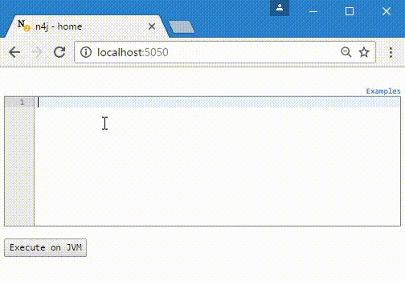

nudge4j is a tiny piece of java code to make your java application accessible to the browser.
It's meant for use during development to provide an environment for experimenting with code against a running application.

Requirements
java 8
internet access
a modern browser (Chrome, Firefox, IE12)
Integration
copy/paste this code anywhere where it is going to be executed and restart your JVM (complete example)
The way it works
The snippet of java code starts a web-server in your JVM allowing for javascript serverside executions
You can expose any java object as arguments, though the first argument must be the server's port